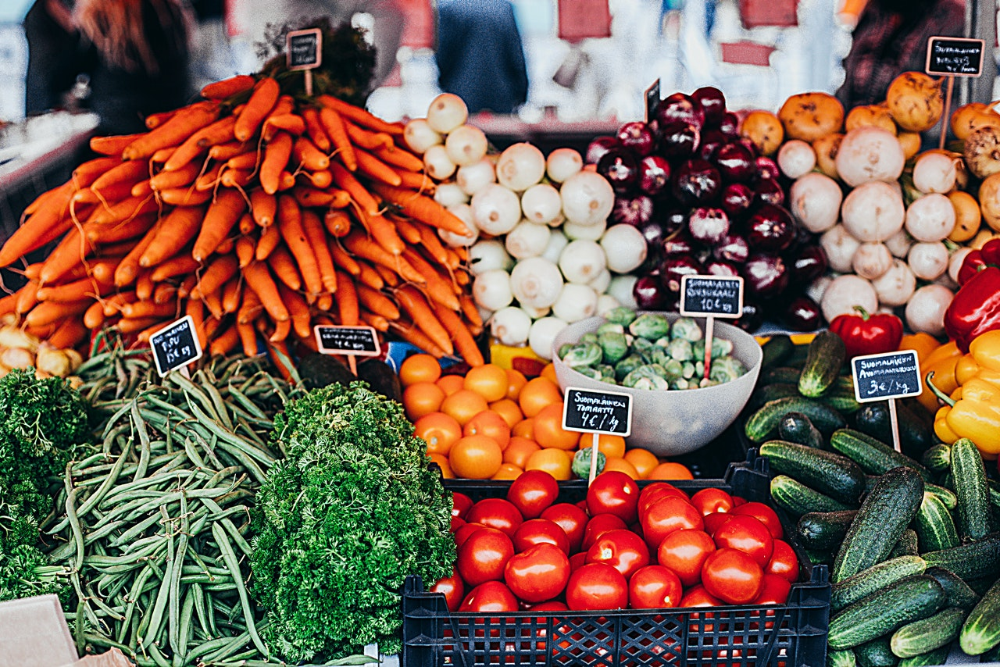

Good nutrition is lifestyle not a diet. It starts with a new way of
thinking about food. Think of your body as a vehicle that uses food
for fuel. Fill your tank with the right type of fuel.
Do not approach your nutrition plan as a diet plan, but rather, a
lifestyle change. If you make a permanent change, you will see big
results. The key to success is a daily focus on your goal.
Portion your meals and track your calories. There are many free
mobile apps available to help track tour activity level and calories
Control impulsive urges to buy junk food, and instead, allow
yourself to one "cheat" meal a week
What to Eat

Protain, souch as eggs, chicken, and lean red meat
Vegatebles but avoid corn and pees
Fruit
Fat, souch as olive oil, nuts, and seeds
Limit the consumpion of bread, pasta, white potatos, and processed
food. These foods are hight in carbobytrates
When you shop for qroceries, shop the outside aimlen and buy
organhic when possible, Stock up on fresh vegetables, almound flour,
and flax seed.
Combine all inngirdiance in a plastic bag, and marinate for at least
an hour. Preheat the oven to 350 degrees. Bake chicken for at least
30-35 minutes or at least untile juices run clear. Broil on hight
for 2 min or until brown. Serve with a frash side salate.